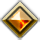

Patch 1.4 – Session 7
Patch 1.4 – Session 7 Système
- L'aptitude Étreinte de la nature a été modifiée.Désormais, le Vaisseau peut s'en servir quel que soit le type d'environnement l'entourant, mais ce dernier influe sur le DD du jet de Tromperie permettant l'activation de l'aptitude. De plus, la description a été clarifiée pour indiquer que l'aptitude fait effet autour du Vaisseau.
- Les Fusils équipés octroient désormais l'action "Recharge", qui permets de recharger l'arme en tant qu'action.Cette action se trouve sur la fiche du personnage, dans l'onglet 'Actions', tout en bas. Elle n'apparaît pas dans le volet d'actions mais peut être placée dans les barres de raccourcis.
- Des animations ont été ajoutées.Une animation a été ajoutée au rechargement automatique des fusils.Une animation a été ajoutée lorsque des dégâts sont infligés.Une animation a été ajoutée lorsque des dégâts excédant un certain montant sont infligés.Une animation a été ajoutée lorsque des points de vie sont récupérés.
- 2 nouveaux raccourcis ont été ajouté, Maj+I et Maj+O, qui permettent respectivement d'afficher le Token et l'artwork du Token ciblé (ces raccourcis sont personnalisables dans "Configuration des raccourcis").